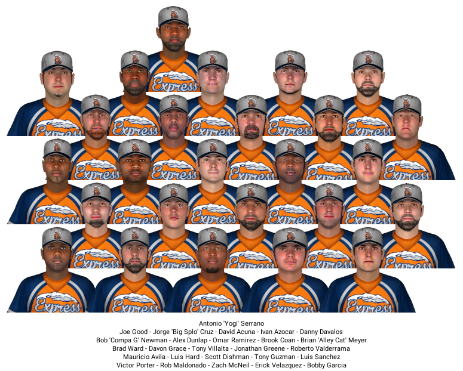

ABC Eastern Division
Pittsburgh Express
54–67 · 7 games back · Express Stadium
Recent results
Upcoming schedule
Pittsburgh Express beat
The latest final on August 19 was Pittsburgh 4, Seattle 1.
This beat has results, upcoming games and franchise records. Its article archive is open for future coverage.
Franchise history
League almanac| Season | Franchise | W–L | Finish |
|---|---|---|---|
| 1980 | Pittsburgh Express | 90–72 | Tournament |
| 1979 | Pittsburgh Express | 83–79 | Tournament |
| 1978 | Pittsburgh Express | 68–94 | Regular season |
| 1977 | Pittsburgh Express | 83–79 | Regular season |
| 1976 | Pittsburgh Express | 77–85 | Regular season |
| 1975 | Pittsburgh Express | 103–59 | Tournament |
| 1974 | Pittsburgh Express | 91–71 | Tournament |
| 1973 | Pittsburgh Express | 84–78 | Regular season |
| 1972 | Pittsburgh Express | 68–94 | Regular season |
Team portrait
